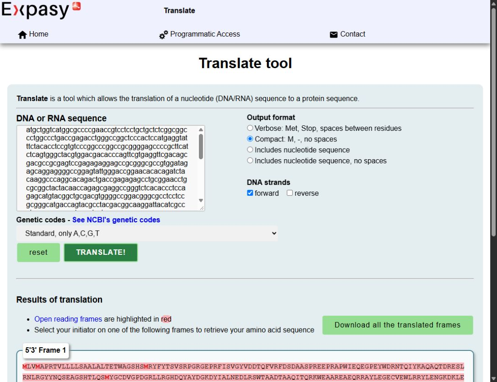

Step 1 - From genomic DNA to exons (CDS) to protein
Record Step 1 in your workbook ↗ · Case files · Tool unavailable?
Links (open in browser)
ANHIG/IMGTHLA (GitHub): https://github.com/ANHIG/IMGTHLA
SFAT (Sequence Feature Annotation Tool): https://www.ebi.ac.uk/ipd/imgt/hla/annotation/
ExPASy Translate (optional): https://web.expasy.org/translate/
What you will produce
your_allele_genomic.txt
your_allele_CDS.txt
your_allele_protein.txt
1.1 Download the genomic DNA sequence (FASTA)
Goal: start with the full genomic sequence (exons + introns) copied from a FASTA file.
What you do
Open the ANHIG/IMGTHLA repository in your browser (GitHub).
Go to the fasta/ folder and open the genomic FASTA file for your locus.
Genomic files typically follow this naming: X_gen.fasta where X = locus/gene (e.g., A_gen.fasta, DRB1_gen.fasta, MICB_gen.fasta).
To see the content of the file, press “View raw”. Alternatively, press the Raw button, copy raw file button, or download button on the right.
Find your allele entry in the file: use Ctrl+F and search for the allele name (e.g., A*01:01:01:01).
Understand the FASTA layout: one header line starting with '>' (identifier + allele name + sometimes length/metadata), followed by the DNA sequence on the next lines (until the next entry or the end of the file).
Copy the sequence letters only (A/C/G/T). DO NOT copy the header line that starts with '>'.
Open Notepad (or similar) as your scratchpad.
Save what you copied as your_allele_genomic.txt.
Copy / Paste / Save
COPY: DNA letters only (A/C/G/T) from the FASTA entry.
DO NOT COPY: the header line starting with '>' (gene/allele metadata).
PASTE: into Notepad first (scratchpad).
SAVE: as your_allele_genomic.txt
What you have now
One long genomic DNA sequence (exons + introns) for one allele saved in a local txt file
Help me through this step
Work through it
- Open the repository link at the top of this page. Open the fasta folder and choose the file ending in _gen.fasta for your locus, for example A_gen.fasta for HLA-A. Use Raw or View raw, then search for the exact allele name with Ctrl+F (Windows) or Command+F (Mac). Check that the search hit is on a header starting with >.
- Start selecting on the line below that header. Stop immediately before the next line starting with >. Copy the selected DNA into Notepad or a plain-text TextEdit document. Remove layout whitespace, then save in your workshop folder as your_allele_genomic.txt. On Windows choose All files if the editor adds an extra .txt extension.
Check your result or recover
Reopen the saved file. It should contain one record’s DNA letters and no header, numbers or second entry. If Raw is slow, use the genomic reference on Downloads and record that source. If your sequence contains unexpected letters, check the original record with the facilitator before changing it.
Understand what you are doing
What the result means
FASTA has two parts. The header identifies the record and the body contains its sequence. Keep the allele name and database release or retrieval date in the workbook even when the header is omitted from the working copy.
How to interpret it
A genomic record can include untranslated regions as well as exons and introns. The genomic, CDS and protein files for the same allele have different lengths and cannot be swapped. The screenshot shows a different locus for demonstration.
Show a screen example
Demonstration only: HLA-B*07:02:01:01, separate from your HLA-A case. Follow the task instructions for your own allele, settings and positions. Screens captured on 5 November 2026; external websites may change.

Use the magnifier to view the complete screenshot in a popup on this page. These examples illustrate the interface and do not replace your own observations or answer the case questions.
1.2 Convert genomic DNA to coding DNA sequences with the Sequence Feature Annotation Tool
Goal: The Sequence Feature Annotation Tool (SFAT) identifies exon/intron features and outputs the coding sequence (CDS), which is the exonic sequence with introns removed.
Tool to use
IPD-IMGT/HLA Sequence Feature Annotation Tool (SFAT).
What you do (click-by-click)
Open the Sequence Feature Annotation Tool page.
Paste your genomic DNA letters only (no FASTA header, no spaces).
Select the locus that matches your sequence (e.g., A, B, DRB1, MICB, etc.).
Select Level: Genomic (because your input includes both the exons and the introns).
Run the annotation by pressing the “Annotate Sequence Now” button.
Copy / Paste / Save
COPY: the full content of your_allele_genomic.txt
PASTE: into SFAT (letters only; no header).
SELECT: correct locus and Level = Genomic.
SAVE: copy the CDS output into your_allele_CDS.txt
WRITE DOWN: exon/intron boundaries and codon_start (if shown).
What to look for in the results
Exon/intron boundaries (where each exon starts/ends in your input).
A coding sequence (CDS): the coding portions of exons joined in order.
A codon_start / reading frame hint (important for correct translation).
Help me through this step
Work through it
- Open the SFAT annotation form. Paste the letters from your_allele_genomic.txt into the sequence box. Select the correct locus and the Genomic level. Choose Annotate Sequence Now and wait for the results.
- In the feature table, find the exon and intron rows. Record the displayed start and end for each relevant exon and any codon_start. Find the CDS section and copy its sequence letters to your_allele_CDS.txt. Record any warning verbatim.
Check your result or recover
If the result is empty or implausible, check that the locus, level and input length match your file. Remove only the FASTA header and formatting. If SFAT is unavailable, use the supplied CDS only for the same reference, with that source recorded. Save your notes before ticking the task.
Understand what you are doing
What the result means
SFAT maps sequence features relative to known HLA records. The CDS contains the coding parts of exons in order. Some exonic bases are untranslated and are outside the CDS.
How to interpret it
A predicted exon boundary or CDS does not establish the transcript actually made in a cell. Record warnings and distinguish the submitted input coordinates from coordinates in the extracted CDS.
Show a screen example
Demonstration only: HLA-B*07:02:01:01, separate from your HLA-A case. Follow the task instructions for your own allele, settings and positions. Screens captured on 5 November 2026; external websites may change.


Use the magnifier to view the complete screenshot in a popup on this page. These examples illustrate the interface and do not replace your own observations or answer the case questions.
1.3 Translate the CDS into a protein sequence
Goal: convert the CDS into amino acids (protein) so you can do downstream steps (alignment, surface accessibility, structure).
Option A (preferred): take the protein directly from SFAT output
In the SFAT results, find the Protein sequence in the “Protein” tab or at the bottom or in the GenBank/ENA/IMGT/HLA section.
Copy the one-letter amino-acid sequence into your_allele_protein.txt.
Copy / Paste / Save
COPY: the one-letter amino-acid sequence from the SFAT protein/translation output.
SAVE: as your_allele_protein.txt
Option B (manual/universal): translate the CDS with ExPASy Translate
Open ExPASy Translate (https://web.expasy.org/translate/).
Paste the CDS (from your_allele_CDS.txt) — NOT the genomic sequence.
Choose an output format (default is Compact: M, -, no spaces).
Press the “TRANSLATE!” button.
By default ExPASy shows 6 possible frames (3 forward, 3 reverse).
If SFAT provides codon_start, use it to select the correct forward frame: start=1 (in SFAT) -> frame 1 (in ExPASy); start=2 (in SFAT) -> frame 2 (in ExPASy); start=3 (SFAT)-> frame 3 (in ExPASy).
Copy the relevant protein sequence into your_allele_protein.txt.
Optional: ExPASy can download all frames as one text file.
Copy / Paste / Save
COPY: the full content of your_allele_CDS.txt
PASTE: into ExPASy Translate (not genomic DNA).
CHOOSE: the correct frame (use SFAT codon_start if available).
SAVE: as your_allele_protein.txt
Quick sanity checks (20 seconds)
Did you accidentally paste the FASTA header (>...)? SFAT expects sequence letters only.
Did you translate genomic DNA instead of CDS? Unspliced introns can introduce stops or change the apparent frame. Check the annotated input and expected frame.
Do you have a codon_start from SFAT? Use it; it prevents frame mistakes.
Help me through this step
Work through it
- Look for the protein or translation entry in SFAT. Copy only its one-letter sequence to your_allele_protein.txt. Keep a note of the reported stop or unknown symbol separately. Record the number of amino acids before the first confirmed stop.
- If SFAT supplies only CDS, open ExPASy Translate, paste the CDS and run Translate. Use the forward frame supported by codon_start and the input orientation. Compare the start and approximate length with the same-locus reference.
Check your result or recover
If you see many stops, check that you pasted CDS and selected the correct frame. If the expected frame itself stops early, keep that result and record the stop. Never choose a different frame just to make the protein longer. If frame evidence is missing, ask the facilitator before preparing a FASTA.
Understand what you are doing
What the result means
A codon is a group of three nucleotides. codon_start gives the offset to the first complete codon in a feature. Translate the annotated CDS in its coding orientation and keep the selected frame in your notes.
How to interpret it
A stop ends the translated segment. An X is an unresolved residue unless the source documents another convention. An HLA precursor can include a signal peptide, so save which sequence you copied for later numbering checks.
Show a screen example
Demonstration only: HLA-B*07:02:01:01, separate from your HLA-A case. Follow the task instructions for your own allele, settings and positions. Screens captured on 5 November 2026; external websites may change.




Use the magnifier to view the complete screenshot in a popup on this page. These examples illustrate the interface and do not replace your own observations or answer the case questions.